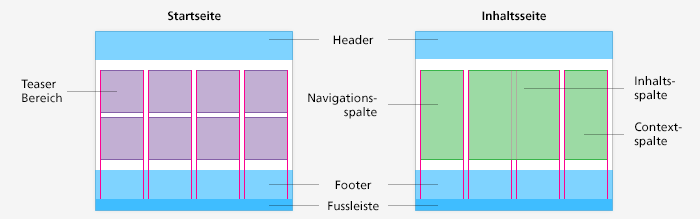

Basic Grid and Page Types
Basic Grid
The websites are made up of three segments:
the header, the four-column content section, and the footer.

The four-column grid is used in different ways by the various page types
Page Types
Basically, there are two page types; the home page and the content page. There are also some mixed forms and special pages (see “Sample Pages”).
Home page
The home page is made up of the header (that can contain the global navigation section, which is explained in the Elements Page , the teaser section, and the footer. The teaser section is divided into four columns. There are many different teasers for the various applications, and these are listed in the “Content Modules” section and described in detail there. The teasers can be used flexibly in the teaser section. For instance, a focus teaser can be spread over three columns, while a person teaser with a portrait of the responsible Federal Councillor can be limited to one column.
Content Page
A content page also has a header and a footer. In place of the teaser section, this page has a four-column content section. The column on the left is used as the left navigation bar, the two columns in the middle are set aside for the content proper, while the column on the right is used as the context pane.
Left Navigation Bar:
The navigation used on the left of the content section is dynamic, meaning that the subsections of the page currently in use are always shown. There are three parts to the navigation: a link back to the previous level, the navigation header with the title of the current page, and the actual navigation with links to the sub-pages. Its use is described on the Elements Page.
Content Section
The content section contains the title and subtitle of the page, the body copy, the images, info boxes, and further information. The further information section is always positioned as the last element in the content section and should not be placed in the context pane. Usability tests have shown that users paid little attention to the information contained in the context pane.
Context Pane
The context pane is reserved for the following elements: wherever it makes sense to do so, a direct contact should be placed at the very top. If there is a shopping cart element, this is placed directly under the contact box. Teasers, such as an RSS feed box or a temporary teaser (for instance for a conference) can also be placed in this section. However, in no case is it possible to have more than three elements here. If using any of the elements listed here does not make sense, then the column remains blank.
No additional information and no essential content components may be placed in the context pane, with the exception of the elements mentioned above.